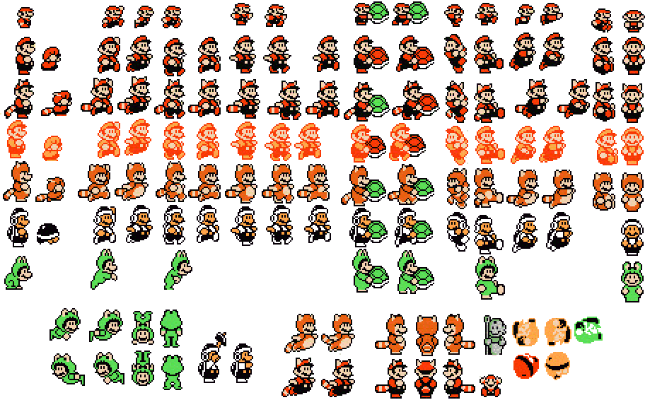
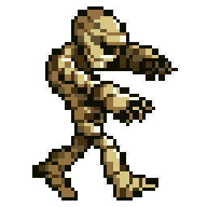

Introducción a Phaser
Carlos León
cleon@ucm.es
Qué es Phaser
Phaser es un framework que nos permite construir juegos en HTML5 para equipos de escritorio y dispositivos móviles
Tiene una apasionada comunidad en el proceso de desarrollo, por lo que crece rápidamente
Game
El objeto principal de Phaser es un objeto JavaScript llamado Game
Dentro de un juego (Game) hay escenas (Scene), y dentro de escenas, objetos (GameObject), que son los que darán lógica y representación al juego
Escenas en Phaser
Las =Scene=s de Phaser son la unidad mínima que maneja el framework para crear una escena de juego
Una Scene es un objeto JavaScript, con métodos y atributos ("propiedades") para su gestión
Phaser incluye un "scene manager" para gestionarlas
Por ejemplo, puede haber una escena para:
- el menú principal
- cada uno de los niveles
- el inventario
En teoría (aunque hay libertad), cada escena representa una lógica de interacción concreta
Puede haber varias escenas activas
Phaser permite varias escenas activas y superpuestas
El orden de las escenas es importante, ya que el scene manager las actualiza y pinta en el orden en el que son añadidas
Métodos básicos de una escena
El motor llama a estos métodos automáticamente:
init: se ejecuta cuando se carga la escena. Aquí se pueden pasar datos entre escenas.preload: aquí hay que cargar los recursos antes de que sean usados.create: una vez que la clase está instanciada y el motor está a punto, se llama a este método para inicializar.update(time, delta): se llama cada ciclo de juego, para modificar el estado.
Además, Phaser proporciona una serie de propiedades que podemos utilizar en nuestro juego. Mayoritariamente, estas propiedades son formas de acceder a los subsistemas de Phaser
Algunos subsistemas
Accesibles desde el objeto Scene con scene.add, scene.load…:
add: La factoría de GameObjectcameras: La cámarainput: La entrada de Phaserload: el cargador de recursossound: el sistema de sonidoscene: el SceneManagertime: el manager de tiempophysics: el sistema de físicas
Utilidades matemáticas
Phaser.Math contiene métodos que ayudan a realizar ciertas operaciones matemáticas típicas de un motor de videojuegos
Además, tiene un generador de números aleatorios muy útil, accesible a través de Phaser.Math.RND
Crear un juego en Phaser
Para crear un juego, hay que crear una instancia de Phaser.Game:
new Phaser.Game({
type: Phaser.AUTO,
width: 800,
height: 400,
scene: [ClaseEscenaInicial, ClaseEscenaNivel1]
})
Esto crea un <canvas> al final de la página
En realidad, podemos crearlo de una manera más sencilla
Si queremos usar nuestro propio <canvas>:
<canvas id="juego"></canvas>
<script>
new Phaser.Game({
type: Phaser.CANVAS,
canvas: document.getElementById('juego'),
width: 800,
height: 400,
scene: [ClaseEscenaInicial, ClaseEscenaNivel1]
})
</script>
Si queremos que el <canvas> tenga el foco, lo hacemos con focus():
<script>document.getElementById('juego').focus()</script>
Documentación
- Documentación de Phaser 3: Acceder desde la barra de menú en la parte superior
- Nuevo sistema de documentación de Phaser: Similar al anterior (en Beta)
- Ejemplos de Phaser 3
- Notes of Phaser 3
Localización de los recursos
Phaser y URLs
Por seguridad, los navegadores restringen mucho el acceso al disco
Por tanto, todos los recursos (imágenes y demás) tienen que ser cargados a través de la red
Para ello, tenemos que referencias los recursos con URLs
URLs
En Internet (y en más sitios), cada elemento tiene un identificador único
Solemos referirnos a URLs (Uniform Resource Locator)
URLs absolutas
http://www.ucm.esftp://rediris.com/resourceahttp://es.wikipedia.org/wiki
La parte de antes de : es el protocolo (http, ftp…)
URLs relativas
En una web, / es la raíz del sitio
El directorio especial ../ indica el directorio padre al del fichero actual.
El directorio ./ indica el directorio del fichero actual
./ejemplo/ruta../otro_hijo/ruta/musica.ogg/hijo_raiz_sitio/archivo.png
Carga de recursos en memoria
Cargar
Se le añade una key (clave o nombre) al recurso para poder identificarlo
// this es un objeto Scene
function preload() {
// Para cargar desde el sitio de Phaser
this.load.setBaseURL("https://examples.phaser.io/");
this.load.image('player', 'assets/sprites/phaser-dude.png');
this.load.image('platform', 'assets/sprites/platform.png');
}
Podemos cargar diferentes recursos como: imágenes, archivos JSON, atlas de texturas, video, sonido, tilemaps…
Las rutas son relativas al index.html (aunque se pueden modificar con los métodos setPath y setBaseUrl del subsistema de carga de recursos)
Liberación de recursos
Si cambiamos de escena y la desactivamos, es muy probable que haya recursos que ya no utilizaremos nunca
En este caso podemos eliminarlos de la caché de Game
image1.destroy();
sound4.destroy();
Sprites en Phaser
Son las imágenes 2D que sirven para visualizar los objetos en un juego 2D. En Phaser se instancian así:
// this es una Scene
player = this.add.sprite(100, 200, 'player');

Figura 1: player
Hay que usar la clave que se le puso en la carga. El objeto, obviamente, debe estar cargado memoria con scene.load
Spritesheet o atlas de sprites

Figura 2: Spritesheet o atlas de Sprites
Sirven para optimizar recursos:
- Reduce el número de accesos al servidor (no es lo mismo traerse una imagen grande con muchas imágenes pequeñas que muchas imágenes pequeñas individuales)
- Es más eficiente en memoria
Sirve también para crear animaciones por frames
// this es un objeto scene
function preload() {
// Recordad: solo para cargar desde el sitio de Phaser
this.load.setBaseURL("https://examples.phaser.io/");
this.load.spritesheet('mummy_spritesheet',
'assets/sprites/metalslug_mummy37x45.png',
{ frameWidth: 37, frameHeight: 45, endFrame: 17 });
}
function create() {
let mummy = this.add.sprite(300, 200, 'mummy_spritesheet');
this.anims.create({
key: 'walking',
frames: this.anims.generateFrameNumbers('mummy_spritesheet', { start: 0, end: 16 }),
frameRate: 10,
repeat: -1
});
mummy.play('walking');
}

Figura 3: Animation